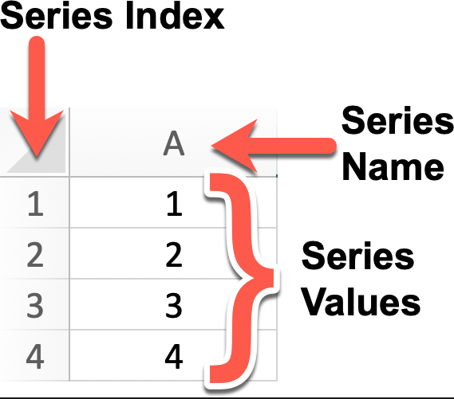
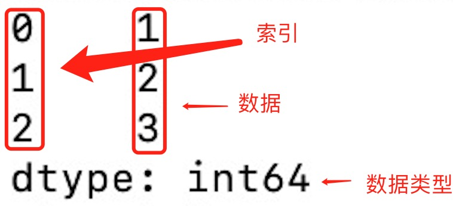
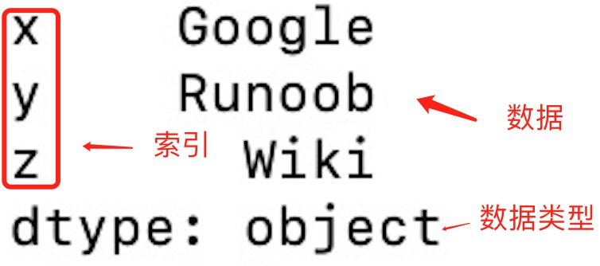
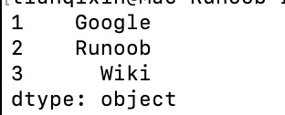
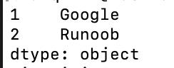
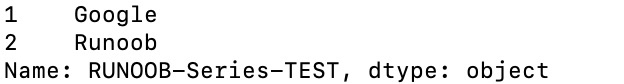

Pandas データ構造 - Series
Series は Pandas における中核的なデータ構造の一つで、1次元の配列に似ており、データとインデックスを持ちます。
Series は任意のデータ型（整数、浮動小数点数、文字列など）を格納でき、ラベル（インデックス）を介して要素にアクセスできます。
Series のデータ構造は非常に便利です。さまざまなデータ型を扱えるだけでなく、ラベルによる高速なデータアクセスや操作など、効率的なデータ操作能力を維持しているからです。
Series の特徴：
1次元配列：Series の各要素には対応するインデックス値があります。
インデックス：各データ要素はラベル（インデックス）を介してアクセスできます。デフォルトではインデックスは 0 から始まる整数ですが、カスタムのインデックスを設定することもできます。
データ型：
Series整数、浮動小数点数、文字列、Python オブジェクトなど、異なるデータ型の要素を格納できます。サイズ不変性：Series のサイズは作成後は変わりませんが、append や delete などの特定の操作によって変更できます。
操作：Series は、数学演算、統計分析、文字列処理など、さまざまな操作をサポートします。
欠損データ：Series には欠損データを含めることができ、Pandas では欠損値や値なしを表すために NaN（Not a Number）を使用します。
自動アライメント：複数の Series に対して演算を行うと、Pandas はインデックスに基づいて自動的にデータを整列させます。これにより、データ処理がより効率的になります。

例
# Series オブジェクトを作成し、名前を 'A'、値をそれぞれ 1, 2, 3, 4 に指定 # デフォルトのインデックスは 0, 1, 2, 3 # Series オブジェクトを表示
# デフォルトのインデックスは 0, 1, 2, 3
series = pd.Series([1, 2, 3, 4], name='A')
# Series オブジェクトを表示
print(series)
# インデックスを明示的に設定したい場合は、次のようにします。
custom_index = [1, 2, 3, 4] # カスタムインデックス
series_with_index = pd.Series([1, 2, 3, 4], index=custom_index, name='A')
# カスタムインデックスを持つ Series オブジェクトを表示
print(series_with_index)
出力結果は次のとおりです。
0 1 1 2 2 3 3 4 Name: A, dtype: int64 1 1 2 2 3 3 4 4 Name: A, dtype: int64
Series は Pandas における基本的なデータ構造の一つで、1次元配列やリストに似ていますが、ラベル（インデックス）を持つため、データの処理や分析においてより柔軟性があります。
以下は、Pandas の Series に関する詳細な説明です。
Series の作成
pd.Series() コンストラクタを使用して Series オブジェクトを作成できます。データ配列（リスト、NumPy 配列など）と、オプションのインデックス配列を渡します。
pandas.Series(data=None, index=None, dtype=None, name=None, copy=False, fastpath=False)
パラメータの説明：
data：Series のデータ部分。リスト、配列、辞書、スカラー値などを指定できます。このパラメータを指定しない場合、空の Series が作成されます。index：Series のインデックス部分で、データにラベルを付けるために使用します。リスト、配列、インデックスオブジェクトなどを指定できます。このパラメータを指定しない場合、デフォルトの整数インデックスが作成されます。dtype：Series のデータ型を指定します。NumPy のデータ型を指定できます。例えばnp.int64、np.float64など。このパラメータを指定しない場合、データからデータ型が自動的に推測されます。name：Series の名前で、Series オブジェクトを識別するために使用します。このパラメータを指定すると、作成された Series オブジェクトは指定された名前を持ちます。copy：データをコピーするかどうか。デフォルトは False で、データをコピーしないことを意味します。True に設定すると、入力データがコピーされます。fastpath：高速パスを有効にするかどうか。デフォルトは False です。高速パスを有効にすると、状況によってはパフォーマンスが向上する場合があります。
簡単な Series の例を作成します：
例
a = [1, 2, 3]
myvar = pd.Series(a)
print(myvar)
出力結果は次のとおりです。

上の図からわかるように、インデックスを指定しない場合、インデックス値は 0 から始まります。インデックス値に基づいてデータを読み取ることができます。
例
a = [1, 2, 3]
myvar = pd.Series(a)
print(myvar[1])
出力結果は次のとおりです。
2
インデックス値を指定することもできます。次の例のとおりです：
例
a = ["Google", "Runoob", "Wiki"]
myvar = pd.Series(a, index = ["x", "y", "z"])
print(myvar)
出力結果は次のとおりです。

インデックス値によるデータの読み取り:
例
a = ["Google", "Runoob", "Wiki"]
myvar = pd.Series(a, index = ["x", "y", "z"])
print(myvar["y"])
出力結果は次のとおりです。
Runoob
key/value オブジェクトを辞書のように使用して Series を作成することもできます：
例
sites = {1: "Google", 2: "Runoob", 3: "Wiki"}
myvar = pd.Series(sites)
print(myvar)
出力結果は次のとおりです。

上の図からわかるように、辞書のキーがインデックス値になります。
辞書の一部のデータだけが必要な場合は、必要なデータのインデックスを指定するだけで済みます。次の例のとおりです：
例
sites = {1: "Google", 2: "Runoob", 3: "Wiki"}
myvar = pd.Series(sites, index = [1, 2])
print(myvar)
出力結果は次のとおりです。

Series の名前パラメータを設定する：
例
sites = {1: "Google", 2: "Runoob", 3: "Wiki"}
myvar = pd.Series(sites, index = [1, 2], name="RUNOOB-Series-TEST" )
print(myvar)

Series のメソッド
以下は、Series でよく使われるメソッドの一部です：
| メソッド名 | 機能の説明 |
|---|---|
index | Series のインデックスを取得する |
values | Series のデータ部分を取得する（NumPy 配列を返す） |
head(n) | Series の先頭 n 行を返す（デフォルトは 5） |
tail(n) | Series の末尾 n 行を返す（デフォルトは 5） |
dtype | Series のデータの型を返す |
shape | Series の形状（行数）を返す |
describe() | Series の統計的な要約（平均、標準偏差、最小値など）を返す |
isnull() | 各要素が NaN かどうかを示すブール型の Series を返す |
notnull() | 各要素が NaN でないかどうかを示すブール型の Series を返す |
unique() | Series 内の一意の値（重複排除）を返す |
value_counts() | Series 内の各一意の値の出現回数を返す |
map(func) | 指定した関数を Series の各要素に適用する |
apply(func) | 指定した関数を Series の各要素に適用します。カスタム操作でよく使用されます。 |
astype(dtype) | Series を指定した型に変換する |
sort_values() | Series の要素をソートする（値によるソート） |
sort_index() | Series のインデックスをソートする |
dropna() | Series 内の欠損値（NaN）を削除する |
fillna(value) | Series 内の欠損値（NaN）を埋める |
replace(to_replace, value) | Series 内の指定した値を置換する |
cumsum() | Series の累積和を返す |
cumprod() | Series の累積積を返す |
shift(periods) | Series の要素を指定したステップ数だけシフトする |
rank() | Series 内の要素のランクを返す |
corr(other) | Series と別の Series との相関（ピアソン相関係数）を計算する |
cov(other) | Series と別の Series との共分散を計算する |
to_list() | Series を Python のリストに変換する |
to_frame() | Series を DataFrame に変換する |
iloc[] | 位置インデックスによるデータの選択 |
loc[] | ラベルインデックスによるデータの選択 |
例
# Series を作成
data = [1, 2, 3, 4, 5, 6]
index = ['a', 'b', 'c', 'd', 'e', 'f']
s = pd.Series(data, index=index)
# 基本情報を確認
print("インデックス：", s.index)
print("データ：", s.values)
print("データ型：", s.dtype)
print("先頭2行のデータ：", s.head(2))
# map 関数を使用して各要素を2倍にする
s_doubled = s.map(lambda x: x * 2)
print("要素を2倍にした後：", s_doubled)
# 累積和を計算
cumsum_s = s.cumsum()
print("累積和：", cumsum_s)
# 欠損値を探す（ここには欠損値がないため、すべて False が返されます）
print("欠損値の判定：", s.isnull())
# ソート
sorted_s = s.sort_values()
print("ソート後の Series：", sorted_s)
出力結果は次のとおりです。
索引： Index(['a', 'b', 'c', 'd', 'e', 'f'], dtype='object') 数据： [1 2 3 4 5 6] 数据类型： int64 前两行数据： a 1 b 2 dtype: int64 元素加倍后： a 2 b 4 c 6 d 8 e 10 f 12 dtype: int64 累计求和： a 1 b 3 c 6 d 10 e 15 f 21 dtype: int64 缺失值判断： a False b False c False d False e False f False dtype: bool 排序后的 Series： a 1 b 2 c 3 d 4 e 5 f 6 dtype: int64
詳細な Series の説明
リスト、辞書、または配列を使用して、デフォルトのインデックスを持つ Series を作成します。
# 使用列表创建 Series
s = pd.Series([1, 2, 3, 4])
# 使用 NumPy 数组创建 Series
s = pd.Series(np.array([1, 2, 3, 4]))
# 使用字典创建 Series
s = pd.Series({'a': 1, 'b': 2, 'c': 3, 'd': 4})
基本操作：
# 指定索引创建 Series
s = pd.Series([1, 2, 3, 4], index=['a', 'b', 'c', 'd'])
# 获取值
value = s[2] # 获取索引为2的值
print(s['a']) # 返回索引标签 'a' 对应的元素
# 获取多个值
subset = s[1:4] # 获取索引为1到3的值
# 使用自定义索引
value = s['b'] # 获取索引为'b'的值
# 索引和值的对应关系
for index, value in s.items():
print(f"Index: {index}, Value: {value}")
# 使用切片语法来访问 Series 的一部分
print(s['a':'c']) # 返回索引标签 'a' 到 'c' 之间的元素
print(s[:3]) # 返回前三个元素
# 为特定的索引标签赋值
s['a'] = 10 # 将索引标签 'a' 对应的元素修改为 10
# 通过赋值给新的索引标签来添加元素
s['e'] = 5 # 在 Series 中添加一个新的元素，索引标签为 'e'
# 使用 del 删除指定索引标签的元素。
del s['a'] # 删除索引标签 'a' 对应的元素
# 使用 drop 方法删除一个或多个索引标签，并返回一个新的 Series。
s_dropped = s.drop(['b']) # 返回一个删除了索引标签 'b' 的新 Series
基本演算：
# 算术运算 result = series * 2 # 所有元素乘以2 # 过滤 filtered_series = series[series > 2] # 选择大于2的元素 # 数学函数 import numpy as np result = np.sqrt(series) # 对每个元素取平方根
統計データの計算：Series のメソッドを使用して記述統計を計算します。
print(s.sum()) # 输出 Series 的总和 print(s.mean()) # 输出 Series 的平均值 print(s.max()) # 输出 Series 的最大值 print(s.min()) # 输出 Series 的最小值 print(s.std()) # 输出 Series 的标准差
属性とメソッド：
# 获取索引 index = s.index # 获取值数组 values = s.values # 获取描述统计信息 stats = s.describe() # 获取最大值和最小值的索引 max_index = s.idxmax() min_index = s.idxmin() # 其他属性和方法 print(s.dtype) # 数据类型 print(s.shape) # 形状 print(s.size) # 元素个数 print(s.head()) # 前几个元素，默认是前 5 个 print(s.tail()) # 后几个元素，默认是后 5 个 print(s.sum()) # 求和 print(s.mean()) # 平均值 print(s.std()) # 标准差 print(s.min()) # 最小值 print(s.max()) # 最大值
ブール式の使用：条件に基づいて Series をフィルタリングします。
print(s > 2) # 返回一个布尔 Series，其中的元素值大于 2
データ型を確認する：dtype属性を使用してSeriesのデータ型を確認します。
print(s.dtype) # 输出 Series 的数据类型
データ型を変換する：astypeメソッドを使用してSeriesを別のデータ型に変換します。
s = s.astype('float64') # 将 Series 中的所有元素转换为 float64 类型
注意事項：
Series中のデータは順序付けられています。- 〜を
Seriesインデックス付きの1次元配列とみなすことができます。 - インデックスは一意でも構いませんが、必須ではありません。
- データはスカラー、リスト、NumPy配列などです。
クリックしてノートを共有
<p style="font-size:14px;">ノートは本記事の内容を拡張したものである必要があります！</p><br> <p style="font-size:12px;"><a href="../tougao.html" target="_blank">記事の投稿は、ここをクリックしてください</a></p> <p style="font-size:14px;"><a href="../w3cnote/runoob-user-test-intro.html" target="_blank">登録招待コードの取得方法</a></p> <h3 class="text-muted"><i class="fa fa-info-circle" aria-hidden="true"></i> ノートを共有する前に必ず<a href=";.html" class="runoob-pop">ログイン</a>！</h3> <p><a href="../w3cnote/runoob-user-test-intro.html" target="_blank">登録招待コードの取得方法</a></p>